🔴 2026년 10월 10일(토)부터 18일까지. 우리는 개막일 저녁에 봅니다. 그런데 이 축제 때문에 야오와랏의 고기가 끊깁니다. 그 사정이 이 글에 있습니다.
1. 이름부터 — 「킨제(กินเจ)」
킨(กิน)은 「먹다」, 제(เจ)는 중국어 「재(齋)」의 태국식 표기다. 즉 「재를 먹는다」, 재계(齋戒)한다는 뜻이다.
노란 깃발에 붉은 글씨로 쓴 「เจ」 가 이 축제의 표지다. 이 글자가 붙은 노점은 아래를 전부 뺀 음식을 판다.
| 빼는 것 | 왜 |
|---|---|
| 고기·생선·달걀·유제품 | 살생을 피한다 |
| 🔴 오신채 — 마늘·양파·부추·파·흥거 | 도교·불교 수행에서 정신을 흐리고 욕망을 자극한다고 본다 |
| 술 | 〃 |
🔴 마늘과 양파를 뺀다는 게 핵심이다. 이건 서구식 비건과 다르다. 채식이 목적이 아니라 몸과 마음을 비우는 재계가 목적이라, 「자극적인 것」이 기준이다.
2. 어디서 왔나 — 구황대제(九皇大帝)
이 축제가 기리는 것은 구황대제, 즉 북두칠성과 그 곁의 두 별을 신격화한 아홉 별의 신이다. 도교 신앙이고, 중국 남부 특히 복건성 일대에서 성했다.
중국력 9월 1일부터 9일까지 이 신들이 인간 세상에 내려온다고 믿는다. 그 아흐레 동안 신도들은 흰옷을 입고 재계한다. 🔴 날짜가 매년 달라지는 이유가 여기 있다 — 음력이기 때문이다. 2026년에는 그게 10/10~10/18이다.
어떻게 태국에 왔나. 19세기 중국 남부 이민자들이 가져왔다. 특히 푸껫의 기원 설화가 유명한데, 1825년경 푸껫에 온 중국인 오페라단이 열병에 걸렸고, 재계를 해서 나았다는 이야기다. 그 뒤 푸껫 채식축제가 태국에서 가장 크고 극단적인 형태로 자리 잡았다.
🔴 푸껫에서는 신도가 몸에 쇠꼬챙이·칼·우산을 꿰고 거리를 걷는다. 신이 몸에 내렸다는 표시이고, 그 상태에서는 고통도 출혈도 없다고 믿는다. 사진으로 보면 충격적이다.
방콕은 그렇지 않다. 방콕 야오와랏의 채식축제는 음식과 행렬 중심이다. 관음 꽃수레, 사자춤·용춤, 노란 깃발, 그리고 채식 노점 120곳이 이 축제의 실체다.
3. 🔴 「채식 고기」라는 산업
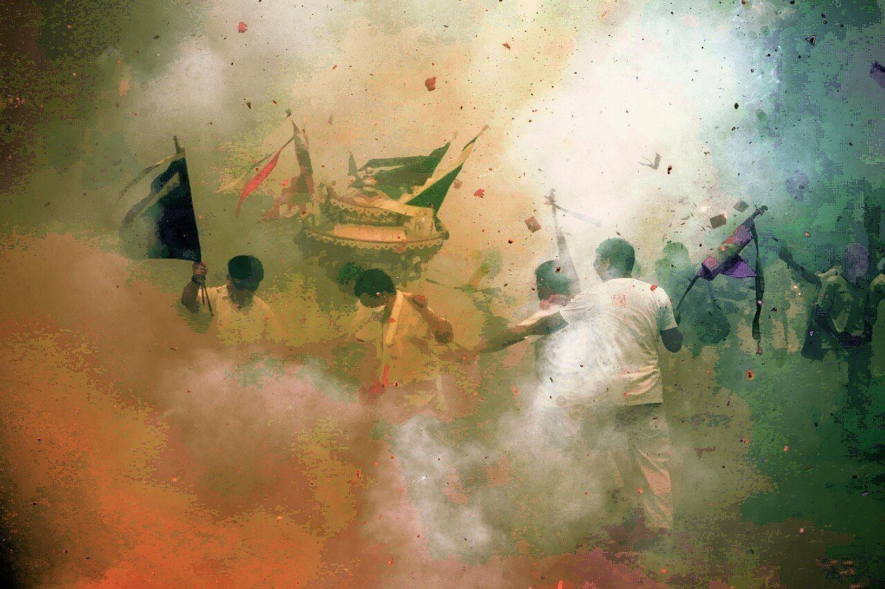
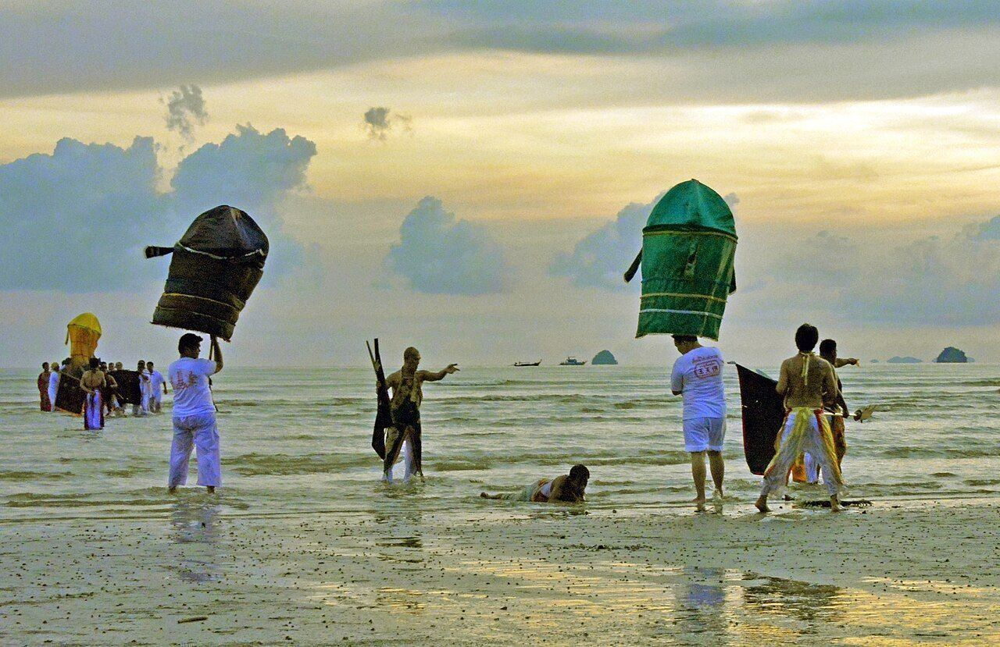
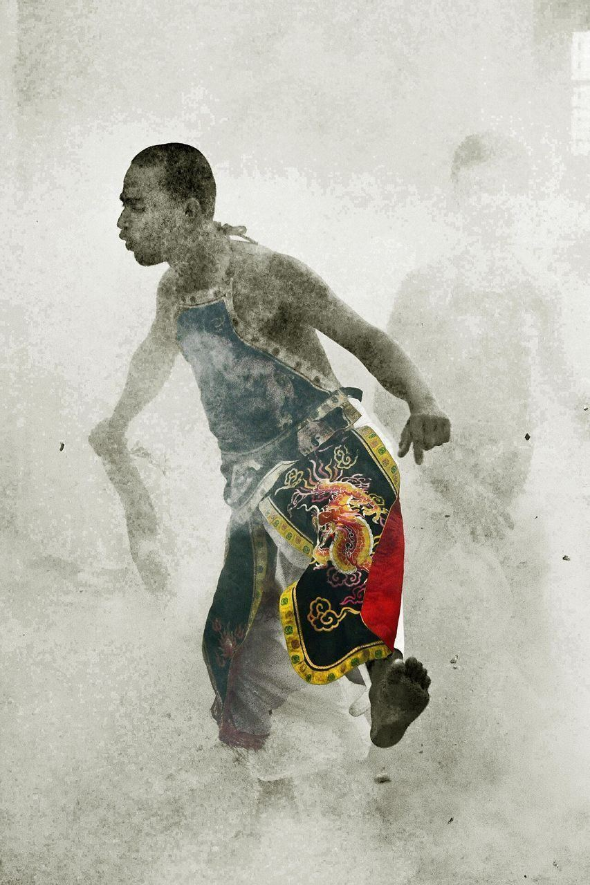
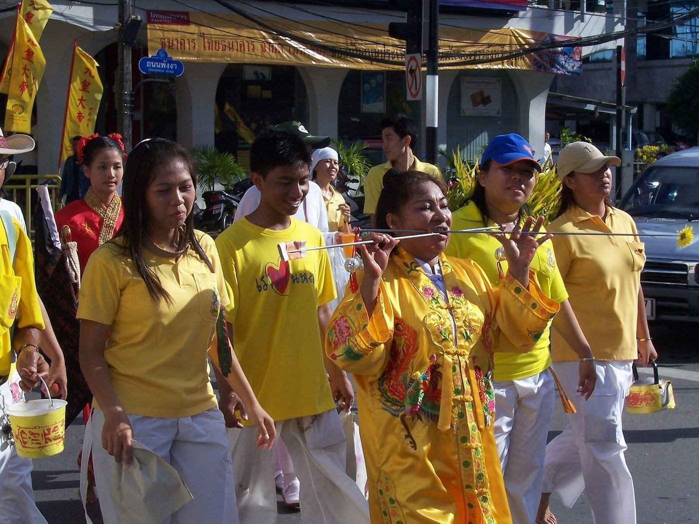
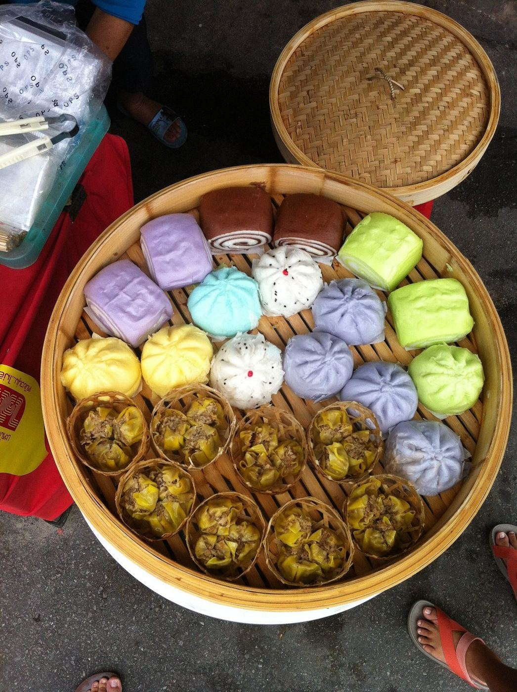
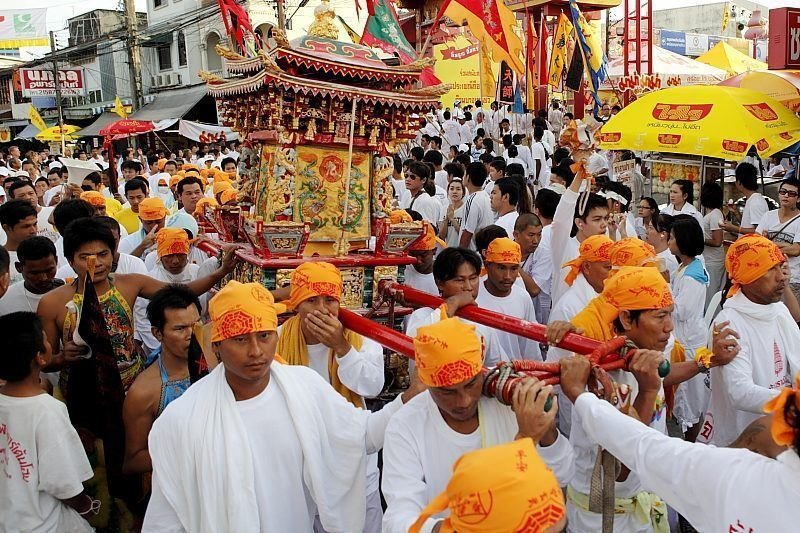
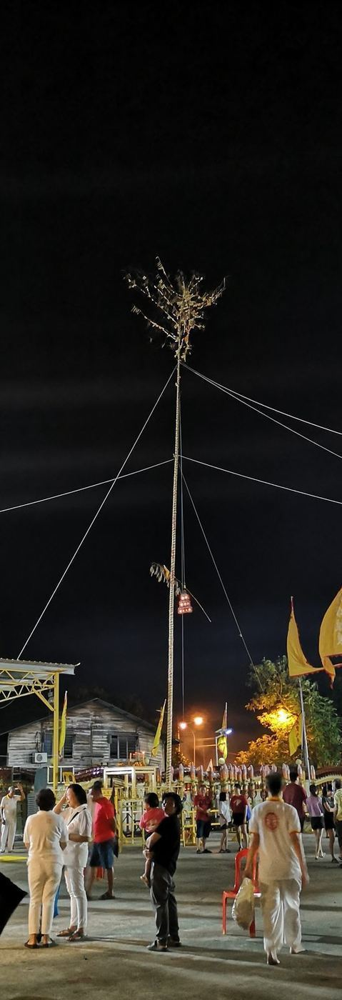
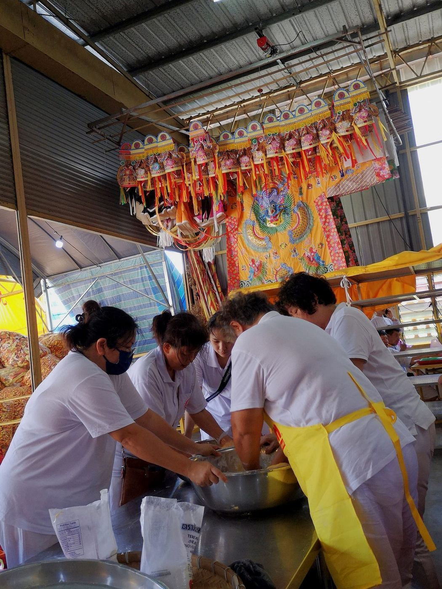
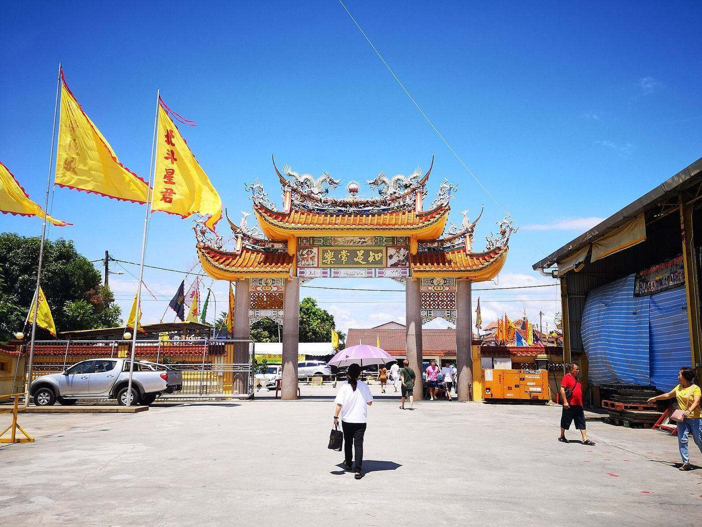
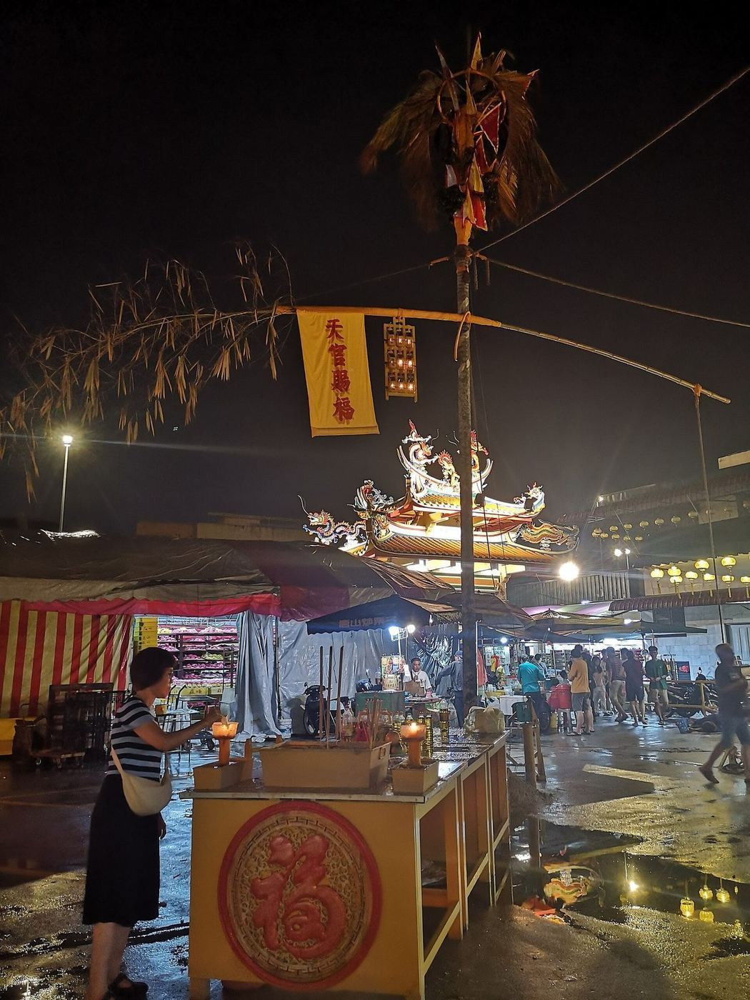
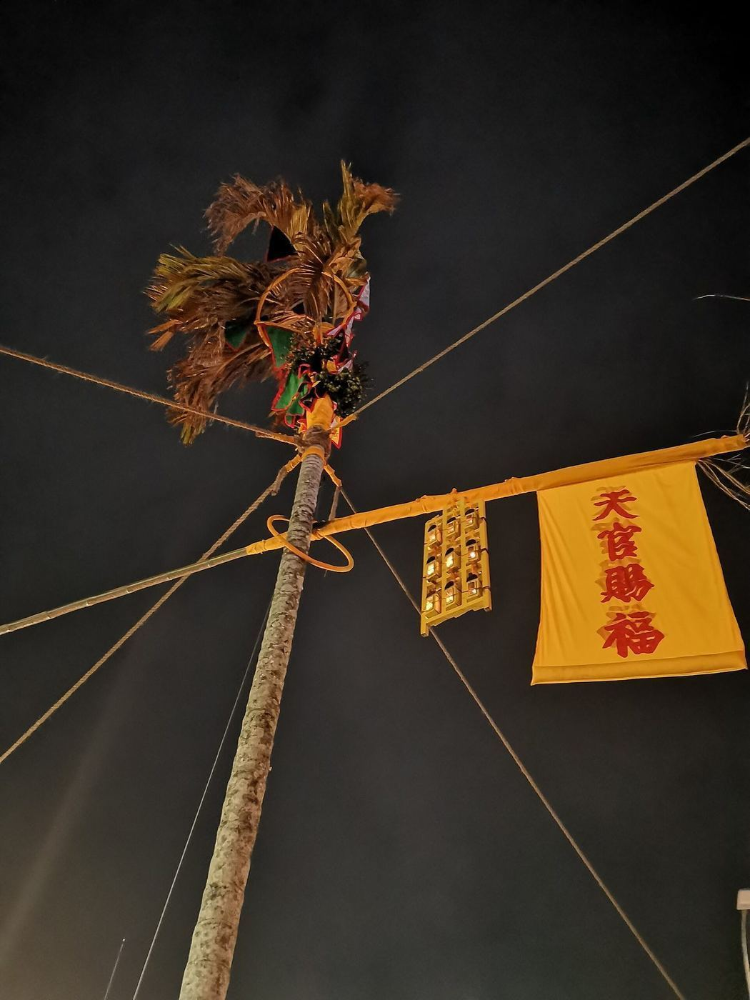
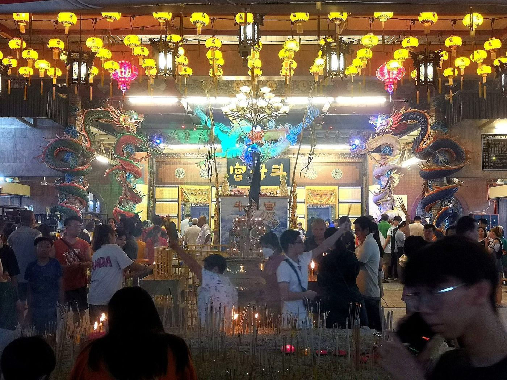
이 축제에서 가장 흥미로운 것이 음식이다. 고기를 빼되 고기의 형태와 식감은 유지한다.
- 밀 글루텐(면근) 을 조려 훈제 오리·차슈처럼 만든다
- 두부껍질(부죽) 을 말아 튀겨 생선처럼 만든다
- 버섯으로 식감을 낸다
- 팟까파오도, 카오카무도, 심지어 오리덮밥도 전부 채식 버전이 나온다
🔴 이건 태국의 발명이 아니라 중국 불교 소식(素食) 전통이다. 한국의 사찰음식이 「재료를 있는 그대로」 쪽으로 간 것과 달리, 중국식 소식은 「고기 흉내」를 정교하게 하는 방향으로 발달했다. 절에서 스님들이 고기를 그리워하지 않게 하려는 실용적 발상이 천 년 넘게 축적된 것이다.
경제 규모. 태국 상공회의소가 매년 이 기간의 소비 규모를 추산해 발표할 정도로 큰 이벤트다. 아흐레 동안 편의점·대형마트까지 「เจ」 코너를 따로 만든다. ⚠️ 구체 금액은 확인하지 못했다.
4. 🔴 이것이 우리 여행에 미치는 것
여기가 실무다. 같은 사실이 한쪽에는 기회이고 다른 쪽에는 손실이다.
| 🟢 기회 | 1년에 아흐레뿐인 축제의 개막일이 우리 일정에 정확히 걸린다. 무료다. 개막일이 가장 화려하다 |
| 🔴 손실 | 같은 기간 야오와랏 가게 상당수가 육류를 중단한다. 미식이 목적이라면 이 거리는 10/10부터 다른 곳이 된다 |
그래서 우리 계획은 이렇게 짰다.
- 야오와랏 미식을 10/7·10/8에 몰았다
- 10/8 저녁을 「채식축제 전 마지막 고기」로 명시했다
- 10/10 저녁의 야오와랏은 「축제」로만 잡았다 — 밥을 기대하지 않는다
🔴 이 두 목적을 같은 날에 담을 수 없다는 것이 이 축제가 우리 일정에 강제한 유일하면서도 가장 큰 제약이다.
보험 채식이 안 맞으면 S. 나 왕(ส. หน้าวัง, 프라나콘)과 유이 프억텃(ยุ้ยเผือกทอด)이 상시 채식 가게라 이 기간에도 안정적이다. 그리고 축제는 야오와랏에 집중되므로 다른 권역에서는 평소대로 고기를 먹을 수 있다.
5. 한국과 비교하면
한국에 정확한 대응물은 없다. 가장 가까운 것을 굳이 찾으면 사찰음식과 초파일이다.
| 킨제 | 한국 | |
|---|---|---|
| 기간 | 아흐레 연속, 도시 전체가 참여 | 사찰음식은 상시, 초파일은 하루 |
| 강도 | 오신채까지 뺀다 | 사찰음식도 오신채를 빼지만 일반에는 안 퍼짐 |
| 확산 | 🔴 편의점·마트까지 전 유통망이 참여 | 종교 안에 머문다 |
| 성격 | 도교 + 중국 불교 | 불교 |
🔴 가장 큰 차이는 「도시 전체가 한다」는 것이다. 이민자 종교가 주류 사회의 유통망까지 아흐레 동안 바꿔놓는 현상은 한국에 없다. 이것이 태국 화교가 소수민족이 아니라 주류에 흡수된 다수라는 사실의 가장 시각적인 증거다. (→ 「야오와랏」)
6. 그날 저녁 무엇을 볼 것인가
| 노란 깃발 | 거리 전체가 노랗게 덮인다. 「เจ」 글자를 찾아보라 |
| 흰옷 | 재계 중인 신도는 흰옷을 입는다 |
| 꽃수레 행렬 | 관음상을 태운 수레. 개막일이 가장 크다 |
| 사자춤·용춤 | 사당 앞에서 돈다 |
| 채식 노점 120곳 | 밀고기·두부껍질로 만든 「고기」를 먹어보라. 진짜 신기하다 |
| 왓 망꼰 까말라왓 | 야오와랏의 대승불교 사원. 축제 기간에 향과 사람이 가장 많다 |
주의: 🔴 현금만. 그리고 사람이 아주 많다. 소지품에 신경 쓸 것.
이어 읽기
- 「야오와랏 — 화교 자본이 태국 경제를 쥔 경위」 — 이 신앙이 어떤 경로로 왔나
- 「꾸디찐 — 1767년이 만든 디아스포라」 — 같은 도시의 다른 이민 종교